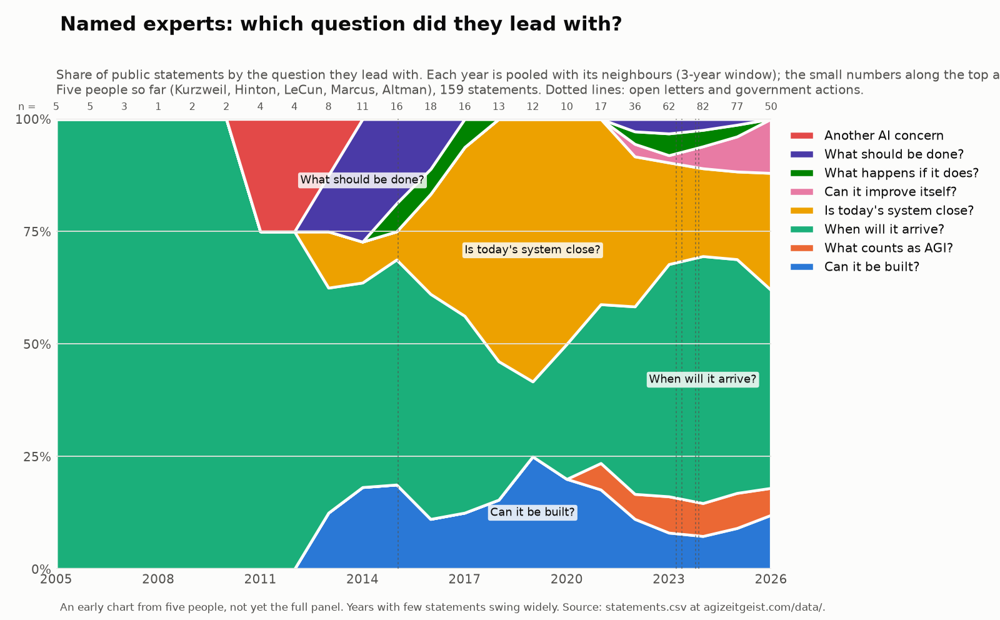
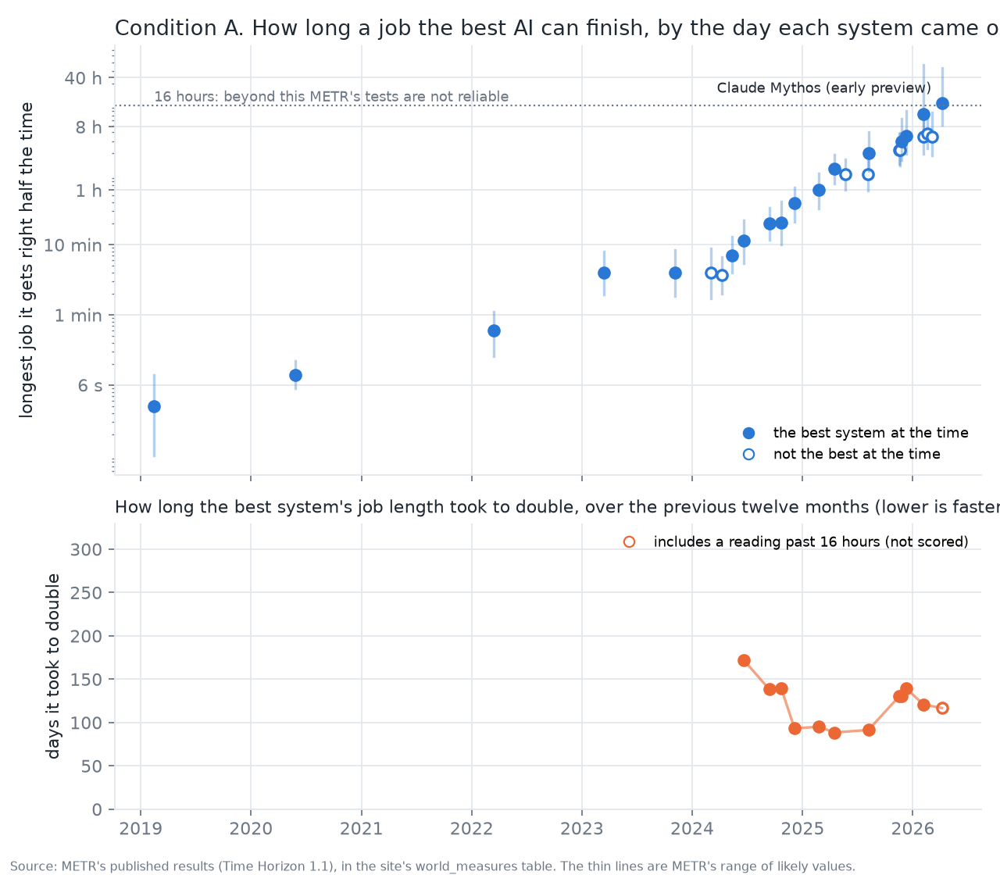
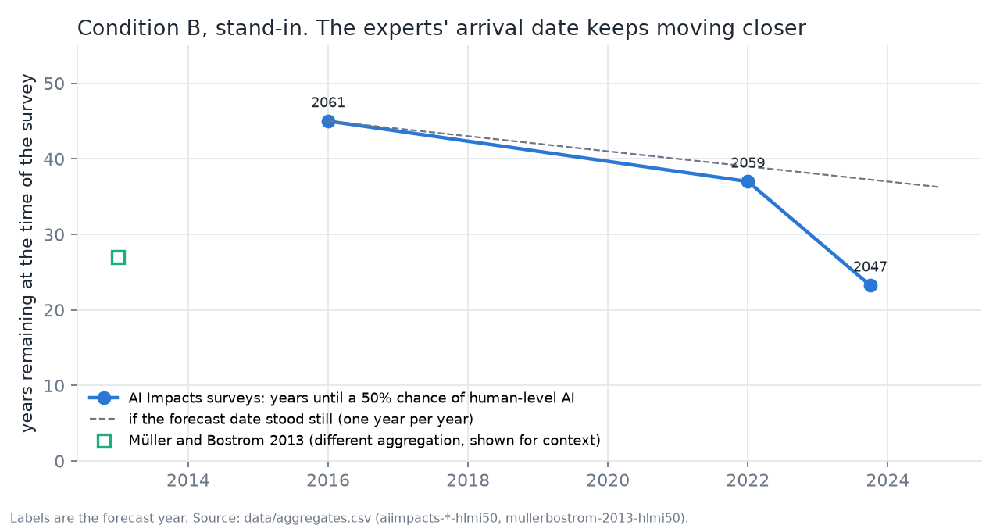
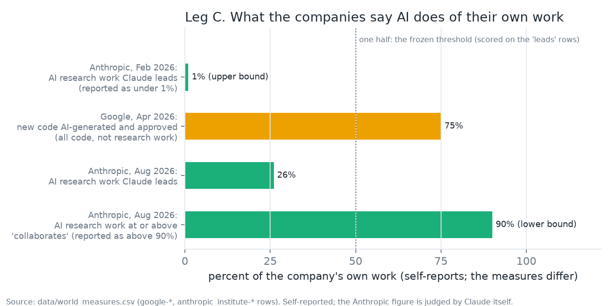
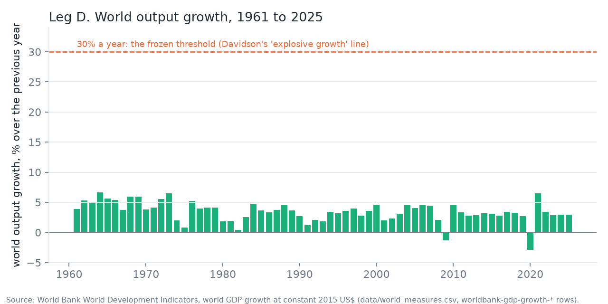

AGI Zeitgeist Tracker
The spirit of the age about artificial general intelligence, as a dated and sourced record since 2005, beside a preregistered test of whether the world has entered the singularity. Every number on this page links to the row it came from.
AGI here means AI that can do most intellectual work a person can. The working question: did the main public argument move from whether it is possible, to when it arrives, to whether today's systems are already close or improving themselves? The method is built so the data can say no. The seed phase is complete and the expert panel is frozen; the full panel traces and the public streams have not started.
What people believe
The tracker proper. One row per public statement, survey result, market reading or poll, coded under methodology version 2.


Entering the singularity: the test and the score
"Any prediction made now about the next five years will look stupid in retrospect" is one of the standard definitions of the singularity, and each definition alone has a known false alarm. The adopted definition requires four things to be true at once, for four consecutive quarters. Each gauge runs from 0 (the 2019 reference) to 1 (the frozen threshold); the smallest gauge is the honest distance remaining.
Leg A. How long a task the best AI can finish
The anchor measure is METR's time horizon: the length of software task, in minutes an expert needs for it, that a model finishes half the time. It is chosen because it has not yet saturated the way benchmarks do. The lower panel is the definition's quantity: the doubling time of the frontier over a trailing twelve months. A flat line would mean steady exponential growth, which is Kurzweil's world but not yet a singularity; a falling line is the signature the definition looks for. The gauge is scored on the last window with no reading past 16 hours, and the threshold also requires the doubling time to have fallen over the last two windows (not met today).

Every reading (26 models) and every doubling-time window
| release | model | 50% horizon | 95% range | frontier | row | |
|---|---|---|---|---|---|---|
| 2019-02-14 | GPT-2 | 0.1 min | 0.0 to 0.1 min | yes | metr-th11-gpt2 | |
| 2020-05-28 | davinci-002 | 0.1 min | 0.1 to 0.2 min | yes | metr-th11-davinci-002 | |
| 2022-03-15 | GPT-3.5 Turbo Instruct | 0.6 min | 0.3 to 1.1 min | yes | metr-th11-gpt-3-5-turbo-instruct | |
| 2023-03-14 | GPT-4 (0314) | 4.0 min | 1.9 to 8.0 min | yes | metr-th11-gpt-4 | |
| 2023-11-06 | GPT-4 (1106) | 4.0 min | 1.9 to 8.4 min | yes | metr-th11-gpt-4-1106 | |
| 2024-03-04 | Claude 3 Opus | 4.0 min | 1.7 to 8.8 min | metr-th11-claude-3-opus | ||
| 2024-04-09 | GPT-4 Turbo | 3.7 min | 2.0 to 6.7 min | metr-th11-gpt-4-turbo | ||
| 2024-05-13 | GPT-4o | 7.0 min | 4.0 to 12.9 min | yes | metr-th11-gpt-4o | |
| 2024-06-20 | Claude 3.5 Sonnet (June 2024) | 11.4 min | 5.5 to 22.4 min | yes | metr-th11-claude-3-5-sonnet-20240620 | |
| 2024-09-12 | o1-preview | 20.3 min | 11.7 to 33.4 min | yes | metr-th11-o1-preview | |
| 2024-10-22 | Claude 3.5 Sonnet (October 2024) | 20.5 min | 10.1 to 40.8 min | yes | metr-th11-claude-3-5-sonnet-20241022 | |
| 2024-12-05 | o1 | 38.8 min | 0.4 to 1.1 h | yes | metr-th11-o1 | |
| 2025-02-24 | Claude 3.7 Sonnet | 1.0 h | 0.6 to 1.7 h | yes | metr-th11-claude-3-7-sonnet | |
| 2025-04-16 | o3 | 2.0 h | 1.2 to 3.2 h | yes | metr-th11-o3 | |
| 2025-05-22 | Claude Opus 4 | 1.7 h | 1.0 to 2.7 h | metr-th11-claude-4-opus | ||
| 2025-08-05 | Claude Opus 4.1 | 1.7 h | 1.0 to 2.7 h | metr-th11-claude-4-1-opus | ||
| 2025-08-07 | GPT-5 | 3.4 h | 1.9 to 6.8 h | yes | metr-th11-gpt-5-2025-08-07 | |
| 2025-11-18 | Gemini 3 Pro | 3.7 h | 2.3 to 6.3 h | yes | metr-th11-gemini-3-pro | |
| 2025-11-19 | GPT-5.1-Codex-Max | 3.7 h | 2.2 to 6.6 h | metr-th11-gpt-5-1-codex-max | ||
| 2025-11-24 | Claude Opus 4.5 | 4.9 h | 2.7 to 10.4 h | yes | metr-th11-claude-opus-4-5 | |
| 2025-12-11 | GPT-5.2 | 5.9 h | 3.3 to 13.6 h | yes | metr-th11-gpt-5-2 | |
| 2026-02-05 | Claude Opus 4.6 | 12.0 h | 5.3 to 60.6 h | yes | metr-th11-claude-opus-4-6 | |
| 2026-02-05 | GPT-5.3-Codex | 5.8 h | 3.2 to 13.6 h | metr-th11-gpt-5-3-codex | ||
| 2026-02-19 | Gemini 3.1 Pro | 6.4 h | 3.9 to 11.6 h | metr-th11-gemini-3-1-pro | ||
| 2026-03-05 | GPT-5.4 | 5.7 h | 3.1 to 12.8 h | metr-th11-gpt-5-4 | ||
| 2026-04-07 | Claude Mythos (early preview) | 17.4 h | 8.5 to 55.1 h | yes | past 16 h | metr-th11-claude-mythos-preview-early |
| window end | days per doubling | frontier points | includes a reading past 16 h |
|---|---|---|---|
| 2024-06-20 | 172 | 3 | |
| 2024-09-12 | 138 | 4 | |
| 2024-10-22 | 140 | 5 | |
| 2024-12-05 | 93 | 5 | |
| 2025-02-24 | 95 | 6 | |
| 2025-04-16 | 89 | 7 | |
| 2025-08-07 | 91 | 6 | |
| 2025-11-18 | 131 | 5 | |
| 2025-11-24 | 131 | 6 | |
| 2025-12-11 | 139 | 6 | |
| 2026-02-05 | 121 | 7 | |
| 2026-04-07 | 117 | 7 | yes |
Leg B. Are forecasts holding up?
The real test scores old forecasts of the measure above against simple trend extrapolation and asks how far ahead they still win. That ledger does not exist yet and can only be scored once the forecast period has passed, so leg B is shown as not yet measurable and the progress number above is an upper bound. The stand-in, available now, is the expert consensus date for human-level AI. If forecasters had the trend right, the date would stand still and the years remaining would fall by one each year, the dashed line. Instead the three AI Impacts surveys show the remaining distance collapsing: the step from 2022 to 2023 removed about 14 years of distance in 1.7 calendar years. That is forecasts failing in the slow direction, which is the direction the definition records.

The survey readings, the steps between them, and the market reading for context
| survey | 50% year | years remaining | row |
|---|---|---|---|
| 2016-01-01 | 2061 | 45.0 | aiimpacts-2016-hlmi50 |
| 2022-01-01 | 2059 | 37.0 | aiimpacts-2022-hlmi50 |
| 2023-10-01 | 2047 | 23.3 | aiimpacts-2023-hlmi50 |
| step | calendar years | change in years remaining | excess pull-in per year |
|---|---|---|---|
| 2016 to 2022-01-01 | 6.0 | -8.0 | +0.3 |
| 2022 to 2023-10-01 | 1.7 | -13.7 | +6.9 |
Manifold market, "AGI created and publicly announced before 2030", for context only (a market price, not a survey):
| date | probability | row |
|---|---|---|
| 2024-01-07 | 36% | manifold-agi2030-2024-01-07 |
| 2024-12-07 | 47% | manifold-agi2030-2024-12-07 |
| 2025-12-07 | 36% | manifold-agi2030-2025-12-07 |
| 2026-09-30 | 53% | manifold-agi2030-2026-09-30 |
Leg C. Is AI doing the improving?
The definition wants the share of inputs to frontier AI progress supplied by AI. Nobody outside the labs can measure that, so what exists is self-report. Two kinds are recorded: a company's share of all new code written by AI, which is a proxy at best and is shown but not scored, and Anthropic's self-measured share of its own AI research work that its model "leads", which is closer to the definition's measure but is judged by the model itself and is the figure scored. The figures do not measure the same thing and should not be compared with each other.

The self-reports
| date | measure | value | row |
|---|---|---|---|
| 2026-02-01 | share of Anthropic's AI research and development work that Claude 'leads' (R&D Automation Index, prototype) | 1% (upper bound) | anthropic_institute-2026-02-rd-leads |
| 2026-04-24 | share of Google's new code that is AI-generated and approved by engineers (company self-report) | 75% | google-2026-04-code-share |
| 2026-08-01 | share of Anthropic's AI research and development work that Claude 'leads' (R&D Automation Index, prototype) | 26% | anthropic_institute-2026-08-rd-leads |
| 2026-08-01 | share of Anthropic's AI research and development work at or above the level where Claude 'collaborates' (R&D Automation Index, prototype) | 90% (lower bound) | anthropic_institute-2026-08-rd-collaborates |
Leg D. Has the economy changed mode?
Robin Hanson's reading of the long record is that the world economy has had three growth modes, hunting, farming and industry, each doubling output about a hundred times faster than the one before: roughly 230,000 years, 860 years and 15 years per doubling. A new mode would double output in years or less. Leg D asks whether that has started, using world real output growth from the World Bank. The threshold, 30 percent a year, is Tom Davidson's published line for "explosive growth" (Open Philanthropy, 2021), chosen so the number is not this project's own invention: far above anything in the modern record, well short of Hanson's "days, not years". This leg is measured by people outside the AI field, which is why it is in the definition; the cost is that output lags capability by years, so it will usually be the weakest leg.

Every year (65 readings)
What the definition still owes
- The backward test. Run on 1995 to 2019 the definition must return "not entered", with the internet years firing only leg B and the deep-learning years firing only leg A. The leg A series starts in 2019 and leg C in 2026, so the test cannot run yet. The definition was adopted without it, with this gap stated here; if the test later fires on those years, the thresholds are amended in the open.
- The leg B ledger. Old forecasts of the anchor measure (starting from the 2016 expert survey's milestone dates) scored against what happened, by lead time. Until it exists, leg B is unmeasured.
- A second source for leg C that is not a company's report on itself.
Method and data
Belief measures and world measures live in separate files and are never combined. statements.csv, aggregates.csv and the community samples hold what people said and believed. world_measures.csv holds capability readings, company self-reports and world output, with the same columns and the same rule that every row carries its source and the question wording. Every search that produced a row is in search_log.csv. The method, the codebook, the definition and every dated change are published here; the scripts that rebuild this page from the data are in the source repository.
Cite as: Fredrickson, J. (2026). AGI Zeitgeist Tracker [dataset]. Version of 2026-10-08, commit 3a21fff. https://agizeitgeist.com. Data under CC BY 4.0; scripts under MIT.